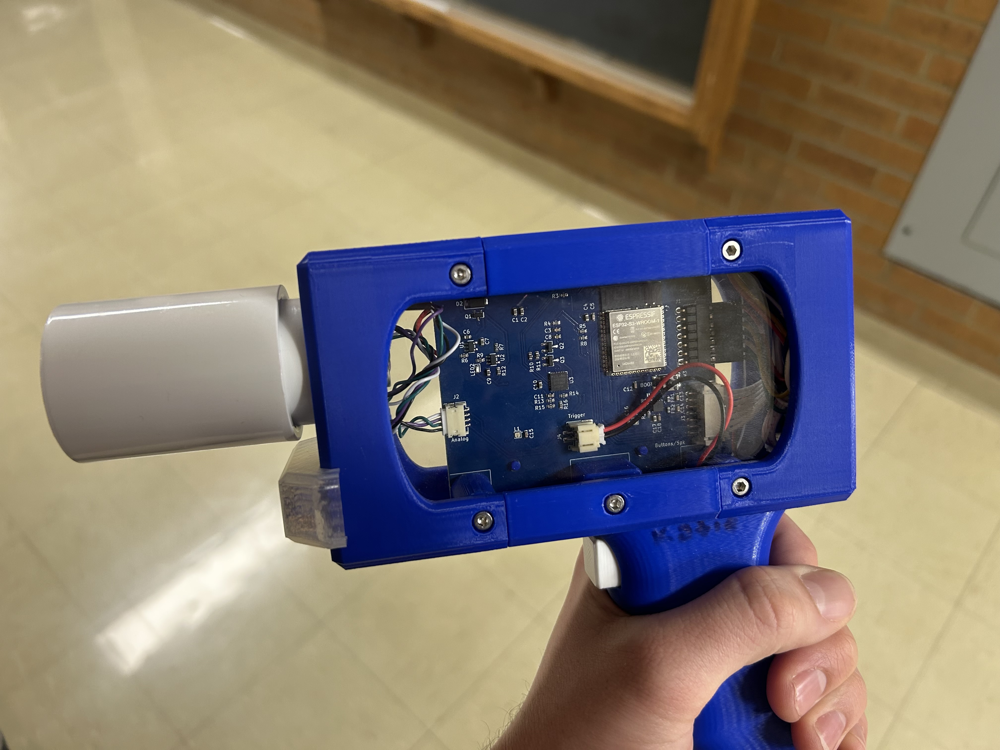
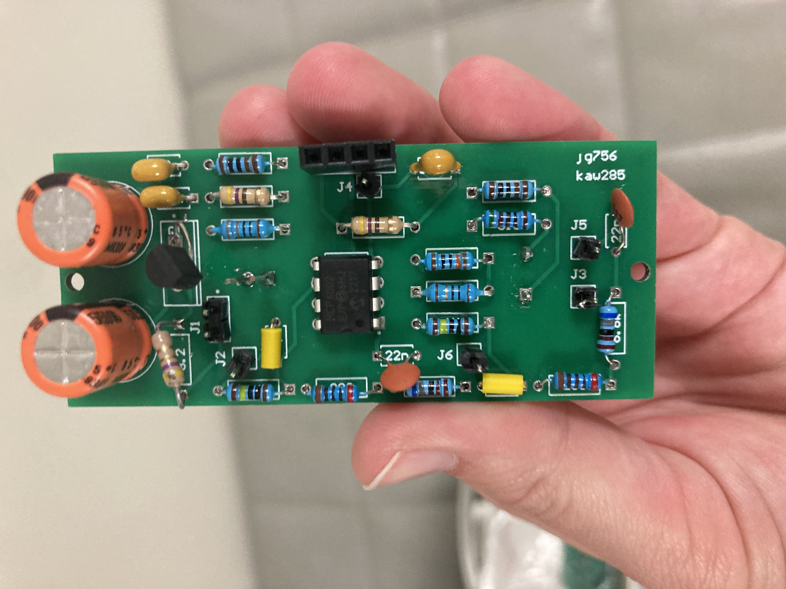
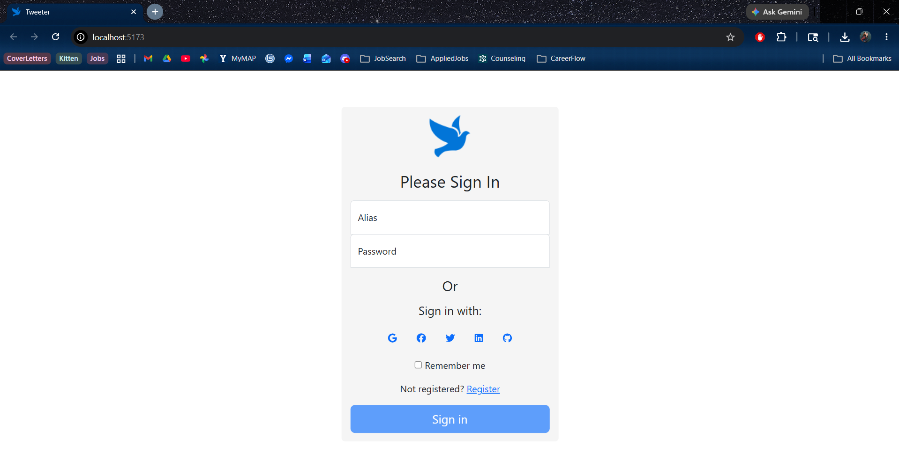
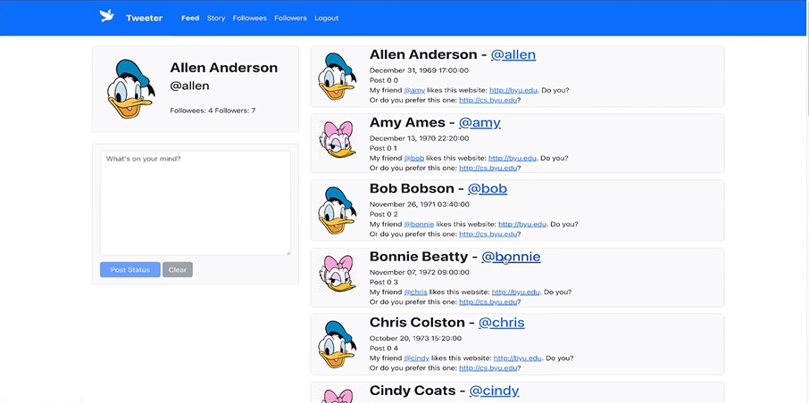
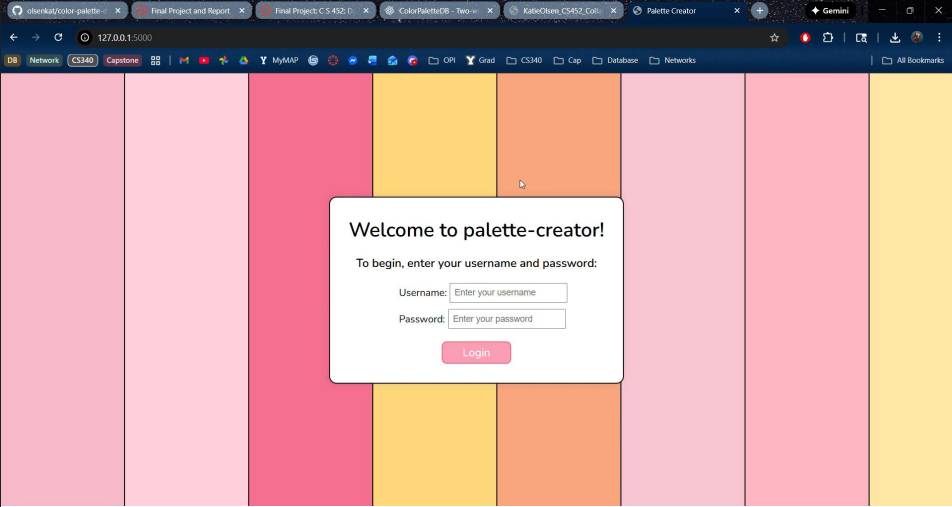
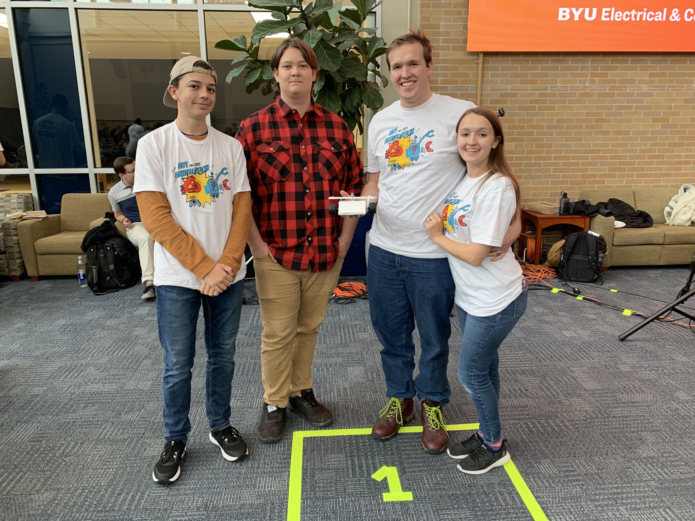
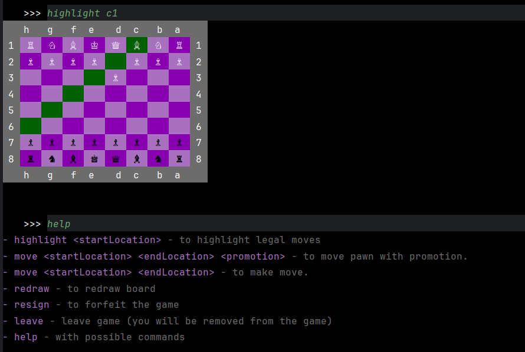
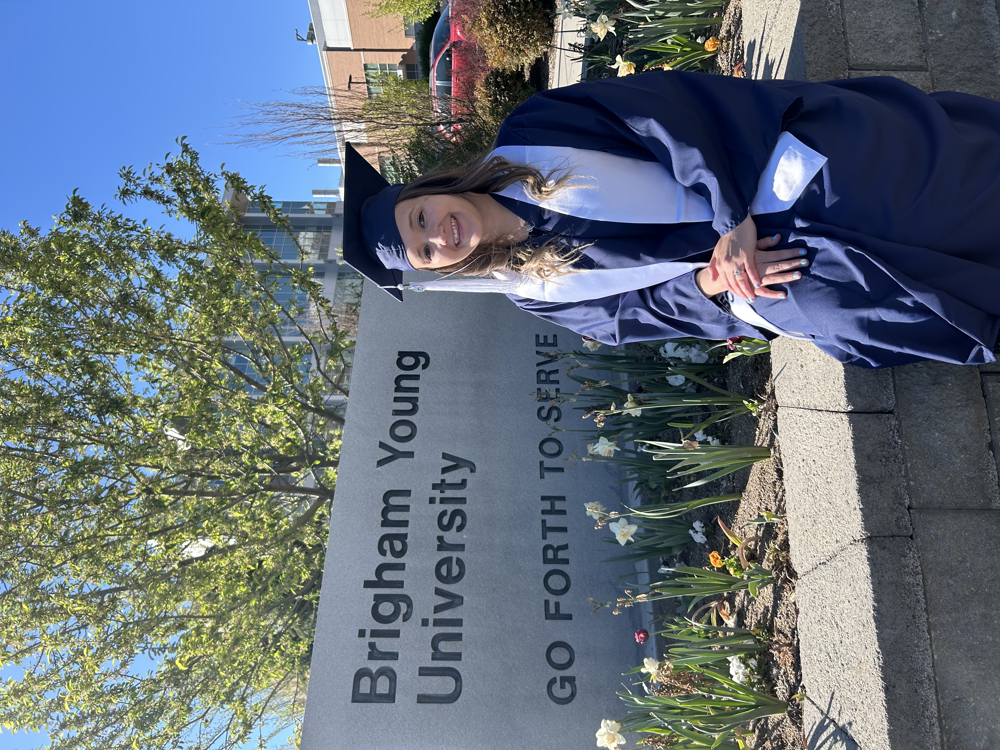
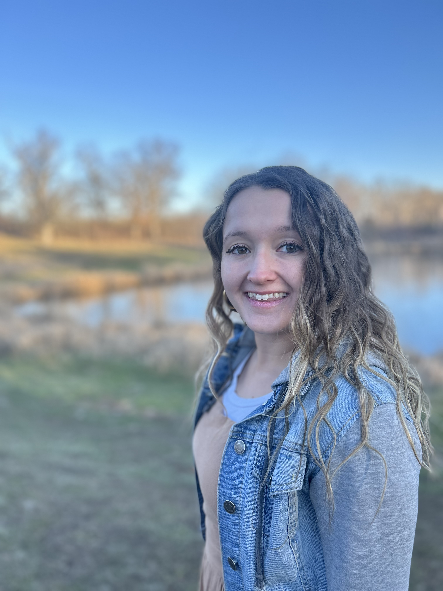

Work Experience
Browns Hill Engineering and Controls
Engineering Intern (May 2024 – Aug 2024)
Built an internal certificate management system in Ignition, consolidating multiple legacy platforms into a single workflow for CSR creation, signing, revocation, and certificate lifecycle management. Developed a Python SDK integrating Cloudflare certificate APIs with an Ignition-based UI for secure certificate operations and management.
- Python
- Ignition HMI/SCADA
- Cloudflare API
- Postman
- MySQL
Browns Hill Engineering and Controls
Engineering Intern (May 2023 – Aug 2023)
Developed an internal data platform (“data vault”) to consolidate duplicated IT, field, and engineering data from Excel-based systems into a centralized MySQL backend with an Ignition user interface. Built Python-based integration pipelines to transform database records into structured application models for real-time visualization and interaction. Modernized legacy FactoryTalk control interfaces by migrating PLC tag systems into Ignition.
- Ignition HMI
- Python
- MySQL
- FactoryTalk
- Data Systems
Browns Hill Engineering and Controls
Engineering Intern (May 2021 – Sep 2021)
Developed internal tooling for SCADA system troubleshooting, cybersecurity workflows, and industrial system documentation using Linux and virtual machines. Built Ignition Python scripts to convert PLC/HMI tag data from multiple industrial systems into structured JSON formats for system integration and visualization.
- Python
- Linux
- SCADA Systems
- Ignition HMI
- Cybersecurity
BYU ECEN Shop Technician
Jan 2021 – Apr 2021
Supported engineering students in hands-on lab environments by assisting with PCB fabrication, 3D printing, and electronics tooling. Created instructional documentation and guided students through hardware prototyping and lab workflows.
- PCB Fabrication
- 3D Printing
- Technical Documentation
- Mentorship
Full-Time Missionary Service
The Church of Jesus Christ of Latter-day Saints (Sep 2021 – Mar 2023)
Delivered daily instruction and presentations, led training sessions, and coordinated community service initiatives. Developed leadership, communication, and cross-cultural collaboration skills through structured teaching and public engagement.
- Leadership
- Communication
- Teaching
- Public Speaking
Projects and Competitions
Automated Pit Exploration System (APES) – INL Capstone Project
Collaborated in a 5-person capstone team under the guidance of Idaho National Laboratory (INL) to develop a robotic visualization and control system integrating Unity and ROS2. The project focused on creating a scalable interface capable of communicating with and visualizing multiple robotic platforms in real time.
Developed a bidirectional data pipeline between Unity and ROS2, enabling control commands sent from Unity to move physical robots while simultaneously receiving live positional data for visualization within the Unity environment. Integrated support for robotic crawler and arm systems, as well as live camera visualization using a ZED camera feed.
The project required collaboration between BYU Capstone, Idaho National Laboratory, and Florida International University, which developed the robotic arm platform. Following project completion, INL began adapting the Unity–ROS2 pipeline for use with additional robotic systems, including humanoid robotics platforms currently in development.
Our team presented the final project at both the Waste Management Conference and the BYU Capstone Design Fair. The project provided extensive experience in systems engineering, robotics integration, cross-team collaboration, and large-scale software/hardware system design.
- ROS2
- Unity
- Systems Engineering
- Robotics Integration
- Real-Time Data Pipelines
- ZED Camera Integration
- Team-Based Development
Junior Core Laser Tag System Project
Collaborated in a 4-person engineering team to design and develop a fully functional laser tag system over the course of a year-long junior core project. The project involved both hardware and software development, including custom PCB design, signal analysis, embedded programming, and system integration.
During the first semester, designed and tested laser communication circuitry using breadboards, oscilloscopes, and LTspice simulations before creating custom PCBs in Altium. Designed receiver and transmitter systems capable of detecting laser frequencies and distinguishing between allied and opposing teams.
During the second semester, integrated the hardware into complete laser tag guns and developed the embedded logic controlling gameplay behavior. Implemented frequency-based team identification logic to prevent friendly fire while allowing interaction with opposing teams. The final project included a custom “infection” game mode demonstrated in a team-produced video presentation.
- PCB Design (Altium)
- Embedded Programming
- Signal Processing
- Oscilloscopes
- LTspice
- Circuit Design & Testing
- Hardware Debugging


PYNQ Space Invaders System Project
Developed a Space Invaders game within a Linux-based embedded systems environment using a PYNQ FPGA development board. The project combined hardware design, kernel driver development, low-level systems programming, and game logic implementation.
Independently developed multiple Linux user-space and kernel-space drivers, including support for buttons, switches, interrupts, DMA operations, and audio playback. Created a configurable Programmable Interrupt Timer (PIT) in SystemVerilog and implemented a corresponding Linux kernel driver with sysfs interfaces allowing runtime configuration of interrupt behavior and game speed.
Designed and implemented an audio codec driver in the Linux kernel to configure audio hardware and stream sound effects to the game engine. Additionally developed a DMA-based sprite transfer system in user space to reduce processor load and improve graphical efficiency.
Collaborated in a team of three on the gameplay systems and rendering logic, implementing classic Space Invaders mechanics including UFO bonus scoring, bunker degradation, explosions, enemy scoring, and dynamic life management.
- Linux Embedded Systems
- SystemVerilog
- Kernel Driver Development
- DMA Programming
- Interrupt Handling
- PYNQ / FPGA
- Audio Codec Integration
- C / C++
RISC-V Pipelined Processor on FPGA
Designed and implemented a custom RISC-V processor on an FPGA as part of a computer architecture project, starting from a single-cycle datapath and evolving it into a multicycle and fully pipelined architecture using SystemVerilog.
Built core CPU components including an ALU and register file, and implemented instruction execution logic to support RISC-V assembly programs written and used for functional verification. Early versions of the design were validated through step-by-step execution tracing and simulation-based debugging.
Extended the pipeline to handle data hazards by introducing NOP-based stalling, and later implemented forwarding logic to improve performance and resolve pipeline dependencies. These changes required careful analysis of instruction flow and timing across pipeline stages.
Integrated a custom I/O subsystem that enabled interaction with external components, ultimately allowing the processor to run a simple maze game implemented on top of the hardware. This added a full system-level layer combining CPU design, memory interaction, and real-time input/output behavior.
- SystemVerilog / RTL Design
- RISC-V Architecture
- Pipelined CPU Design
- Data Hazard Mitigation
- Forwarding & Stalling Logic
- ALU Design
- Register File Implementation
- FPGA Development
- Instruction Set Simulation
Tweeter Social Media Platform
Developed a full-stack social media platform inspired by Twitter for a school software engineering project. The application supported scalable user interactions including account creation, authentication, following/unfollowing users, posting stories, and dynamically generating user feeds.
Built the frontend using React and TypeScript following an MVP (Model-View-Presenter) architecture with structured models, services, and shared types. Implemented both personal story views and follower feed generation with real-time user notifications for actions such as posting content and following users.
Developed a scalable AWS-based backend using Lambda functions, DynamoDB, S3, and message queues. Implemented serverless handlers and queue-based propagation systems to distribute posts efficiently across follower feeds while supporting large-scale user interaction.
Used AWS SAM for deployment and infrastructure management. While the cloud infrastructure has since been disabled to avoid ongoing hosting costs, the system was fully functional and designed to support large user loads.
- TypeScript
- React
- AWS Lambda
- DynamoDB
- AWS S3
- Serverless Architecture
- Queue-Based Processing
- MVP Design Pattern


Color Palette Database Application
Developed a full-stack web application for creating, organizing, and visualizing custom color palettes. The system allows users to create accounts, manage palettes, store individual colors, and organize palettes using searchable tags and categories.
Designed and implemented a relational SQL database with many-to-many relationships between palettes, colors, and tags. Built CRUD functionality for palette and color management while focusing on efficient database modeling and user-oriented workflow design.
Developed the backend using Flask and Python to manage database interactions and application routing, while the frontend was implemented using HTML, CSS, and JavaScript to provide interactive palette visualization and management tools.
The project was completed as part of BYU’s Database Modeling Concepts course and strengthened experience in full-stack development, SQL database architecture, and scalable relational data modeling.
- Python
- Flask
- MySQL / SQL
- HTML & CSS
- JavaScript
- Database Modeling
- CRUD Operations
- Relational Database Design

Antweight Battle Bot Competition
Competed in a 4-person team to design and build an Antweight (under 1 lb) battle bot for a university competition. Focused on embedded programming, electronics integration, and system debugging to ensure reliable bot performance during competition.
Contributed to both software and hardware development, including microcontroller programming and troubleshooting electrical systems under competition constraints.
- Embedded Systems (ESP32)
- Electronics Debugging
- Team-Based Engineering
- C / C++ Programming

BYU CS 240 Chess Client / Server
Developed a multiplayer chess application as part of a software design course, implementing a full client-server architecture with real-time gameplay over the network. The system consists of a command-line client and a server responsible for game management, authentication, and matchmaking.
Implemented real-time gameplay using WebSockets, enabling synchronized moves between players. Built full chess rule validation to enforce legal moves and maintain consistent game state until completion. Added server-side notifications for events such as player joins and game updates.
Designed a persistence layer using MySQL with DAO-based architecture and implemented secure authentication using access tokens and structured login flows.
- Java
- WebSockets
- Client–Server Architecture
- MySQL
- DAO Pattern
- Authentication & Tokens
- Unit Testing

Lockheed Martin Code Quest Competition (2019)
Participated in the Lockheed Martin Code Quest programming competition as part of a 3-person team. Solved a series of timed algorithmic and logic-based challenges under strict time constraints.
Collaborated with teammates to implement solutions in Java, focusing on problem-solving, debugging, and efficient algorithm design during a 2.5-hour competitive session.
- Java
- Algorithmic Problem Solving
- Team-Based Development
- Time-Constrained Programming
Skills
Frontend
- HTML
- CSS
- JavaScript
- TypeScript
Backend / Systems
- Python
- Java
- C
- C++
- C#
- MySQL
- NoSQL
- Linux
- Docker
- RISC-V Assembly
- SystemVerilog
Hardware / Embedded Systems
- FPGA Development
- PYNQ Boards
- ESP32
- Arduino
- PCB Design (Altium)
- Signal Processing
- ROS2
Tools & Platforms
- Git / GitHub
- AWS (Lambda, S3, DynamoDB, SAM)
- Ignition / FactoryTalk HMI
- Virtual Machines
- Unity
Languages
- English (Native)
- Spanish (Advanced Fluency)
Education
Brigham Young University (BYU)
Bachelor of Science in Computer Engineering
Minor in Computer Science
GPA: 3.88
My coursework focused on embedded systems, computer systems architecture, software engineering, data structures, algorithms, and database systems. Through both coursework and projects, I developed experience in full-stack development, systems programming, and hardware/software integration.

About Me
I am a Computer Engineering graduate with interests in both software and systems engineering. I focus on building efficient, reliable systems and enjoy working at the intersection of hardware and software, particularly in embedded systems, distributed systems, and full-stack development.
My experience spans areas including embedded systems, cloud-based applications, networking, and database design, with hands-on work in projects involving real-time systems, robotics, and scalable backend architectures.
Outside of engineering, I enjoy visual art and music, including piano, ukulele, violin, and singing. These creative interests influence how I approach problem-solving, design, and system thinking.
I am motivated by continuous learning and enjoy building projects that combine technical depth with practical application.
